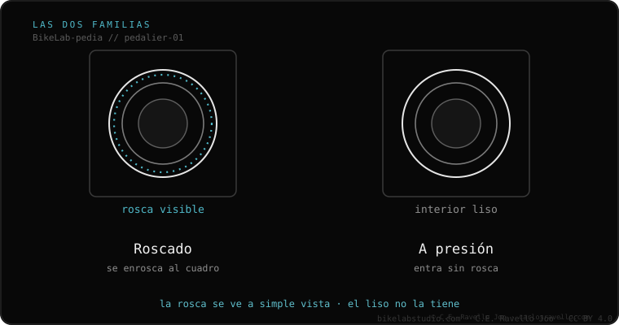
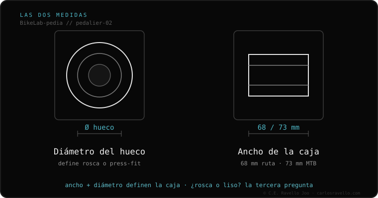

Tu pedalier es de una de dos familias: roscado (se enrosca al cuadro — BSA, T47) o a presión (entra sin rosca — BB30, PF30, BB86, BB92). Para saber el tuyo, mira si el hueco del cuadro tiene rosca o está liso y mide su ancho: casi siempre 68 mm en ruta o 73 mm en montaña. Atajo: las bicis de aluminio suelen ser BSA; el carbono de ruta de 2010–2016 suele ser BB30/PF30; la gama alta moderna tiende a T47.
El pedalier es la pieza donde giran los pedales. Si te abruma la lista de nombres raros, relájate: aquí está el atajo por tipo y año de bici, los nombres en una línea, y cómo confirmarlo midiendo.
Todo pedalier es de una de dos familias. Roscado: se enrosca al cuadro como la tapa de un frasco; es el más fácil de mantener y el que casi nunca hace ruido. A presión (press-fit): entra a presión, sin rosca; es más ligero, pero es el que suele crujir con el tiempo.
¿Cómo las distingues? Mira el hueco del cuadro: si ves rosca (líneas en espiral), es roscado. Si está liso por dentro, es a presión. Eso ya te quita la mitad de la confusión.

La mayoría no va a medir nada. Si sabes qué tipo de bici tienes y de qué año es, esta es la pista más probable:
Esto es la pista más probable, no un certificado. Confírmalo midiendo (abajo).
¿Y los nombres Hollowtech II, DUB o GXP? Esos son el eje de las bielas, no el hueco del cuadro — otra historia, no te lían aquí.
Para estar 100% seguro, mira el hueco del cuadro donde va el pedalier y responde dos preguntas: el ancho (casi siempre 68 mm en ruta o 73 mm en montaña) y el interior (¿tiene rosca o está liso?). Con esas dos respuestas, los nombres raros no son más que combinaciones de esas medidas — y ya sabes cuál comprar.

Si compraste un pedalier y no entra, o tu bici cruje y no sabes por qué: mándanos el caso. Diagnóstico real, y si hace falta, recibimos tus componentes por courier en Trujillo. Escríbenos por WhatsApp
Mira el hueco del cuadro: si tiene rosca es roscado (BSA o T47); si está liso es a presión (BB30, PF30, BB86 o BB92). Después mide el ancho: 68 mm en ruta o 73 mm en montaña. Con esas dos respuestas aciertas seguro.
Casi siempre es un pedalier a presión sin grasa o mal asentado. No siempre hay que cambiarlo: limpiar, engrasar la interfaz y reapretar al par correcto resuelve la mayoría de los casos.
Para mantenimiento en casa y para evitar ruidos, sí. Por eso el estándar moderno T47 (roscado) está reemplazando a muchos sistemas a presión en bicis de gama alta.
A veces, con adaptadores o pedalieres específicos (el eje SRAM DUB entra en casi todos los cuadros con el pedalier correcto). Pero no siempre: depende del ancho y diámetro de la caja de tu cuadro.
Glosario · qué es cada estándar
Compatibilidad · qué encaja con qué